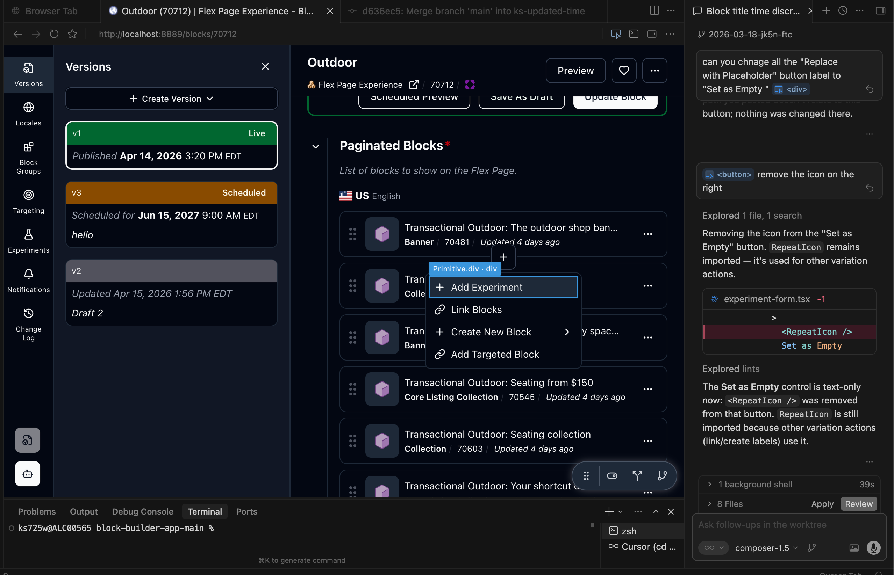

Designing and Shipping with AI
Used AI tools to translate designs into production-ready code, enabling faster iteration and lightweight UI updates with minimal engineering dependency.
My role
- Wrote and shipped production-ready code with Cursor
- Built interactive prototypes in Figma Make to align teams
- Ran internal talks and demos to grow AI adoption
Impact
- Shortened the loop from design to shipped UI
- Shipped UI updates with minimal engineering dependency
- Drove AI adoption and experimentation across the org
Example 1 · Using AI to ship code
From design to productionwith AI
First designer at Wayfair to use AI tools (Cursor) to write and ship production-ready code for lightweight UI changes.
- Translate design directly into code
- Make live updates without engineering dependency
- Reduce handoff time and iteration cycles

Example 2 · AI for prototyping & vision
Prototyping ideasto align on direction
I use Figma Make to create realistic, interactive prototypes that help teams quickly visualize ideas and align on product direction. These prototypes communicate the product vision, support leadership reviews, and drive roadmap decisions.
Building Wayfair's first Figma Make iOS template
PMs were blocked by the lack of a Wayfair theme and usable code output. So I created a token-based system and used Claude to generate a structured code foundation, enabling on-brand results and faster ideation.
Example 3
A CT-Mockfor every PM and designer
Created a CT-Mock for all the org's PMs and designers, packaged in a single doc so anyone can pick it up and start using AI in their workflow.
Example 4 · Being a change maker
Growing an AI communityat Wayfair
I enjoy sharing what I learn, so I actively run internal talks and demos to introduce AI workflows and tools. This helps teams adopt AI in their daily work and improves overall efficiency and experimentation across the organization.